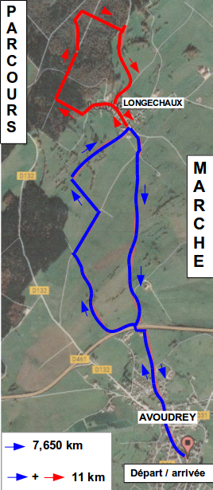

Randonnée pédestre - Informations et règlement
- 
- Parcours : 11km ; D+ 150m et 7,650 km ; D+ 69 m. Petites routes, chemins. Départs libres entre 9h et 10h00.
- Renseignements : Jean Paul FRADIN - 03 81 43 12 55
- Inscriptions :
- Pré-inscriptions : A l'aide du bulletin jusqu'au samedi 1° juillet à 12h00.
- Droit d'inscription = 3€ (à partir de 16 ans). Chèque à libeller à l'ordre de « A. S. AVOUDREY ». Gratuité pour les enfants de moins de 16 ans.
- Adresse d'envoi : Sylvie QUERRY – 1 Rue Mange – 25690 AVOUDREY.
- Tout bulletin illisible et/ou incorrectement rempli, ni accompagné du chèque ne sera pas pris en compte.
- Aucune inscription ne sera prise par téléphone
- Inscription sur place, le jour-même : possible entre 8h00 et 9h30. Droit d'inscription : 5€, gratuité pour les enfants de moins de 16 ans.
- Pré-inscriptions : A l'aide du bulletin jusqu'au samedi 1° juillet à 12h00.
- Accueil : au gymnase d'Avoudrey entre 8H et 9h30
- Retrait des plaquettes-dossards individuelles. Portées sur chaque randonneur, elles seront récupérées à l'arrivée de la marche par l'organisation.
- Toute personne inscrite par avance, ne se présentant pas à l'accueil, sera considéré comme non-participante.
- Prise de connaissance des consignes (tableau d'affichage).
- Quelques rêgles
1- La randonnée se déroule en autonomie. Apporter de quoi vous restaurer et boire en chemin. Un point de ravitaillement en eau sera cependant prévu à LONGECHAUX.
2- Prévoyez chapeau et lunettes de soleil.
3- Les associations organisatrices du Bike and Run se dégagent de toute responsabilité en cas de dégradation ou perte de matériel individuel durant l'activité. Il en va de même en cas de vol dans les véhicules des participants, en stationnement sur l'un des parkings de la manifestation.
4- L'inscription à la randonnée vaut déclaration expresse de non contre indication médicale à participer la randonnée. L'activité physique, c'est la santé, mais n'oubliez pas que votre médecin est votre meilleur conseiller.
5- Les mineurs seront accompagnés par un parent ou une personne responsable désignée par les parents.
6- Les divers renseignements personnels du bulletin d'inscription sont utiles dans un souci de sécurité.
7- Par son inscription, le participant, le responsable de famille, de groupe ou d'association attestent avoir pris connaissance du règlement. Ils s'engagent à en informer leurs membres et à prendre connaissance des différentes consignes qui seront affichées à l'accueil, le jour-même.
8- En cas de non-participation, les randonneurs « pré-inscrits » ne pourront prétendre au remboursement de leur droit d'inscription.
9- Par son inscription, chaque participant déclare abandonner tout droit sur les supports images ou autres réalisés lors de l'événement, qui pourront être utilisés librement par les organisateurs.
10- L'accompagnement en vélo ou autre moyen est interdit (hormis les véhicules d'organisation).
11- Les chiens sont tolérés. Ils devront être tenus en laisse et ne devront en aucun cas, présenter un danger pour les participants. Ils sont entièrement sous la responsabilité de leurs maîtres.
- Tout participant s'engage :
- A respecter le code de la route. Il sera responsable des accidents dont il pourrait être l'auteur. La présence éventuelle de signaleurs à certains points du parcours ne confère pas la priorité de passage aux randonneurs.
- À respecter l'environnement.
- À respecter le parcours balisé et, à ne pas le quitter. Tout participant, n'empruntant pas l'itinéraire proposé et balisé, le fera sous son entière responsabilité.
- À signaler tout abandon éventuel.
- À signaler obligatoirement son retour à l'arrivée, en remettant la « plaquette-dossard »
- Assurance : l'organisation est assurée en responsabilité civile. Il appartient aux participants d'être assuré personnellement en « responsabilité civile individuelle » et en « individuelle accident ».
- Modifications ou Annulation : En cas de force majeure, circonstance mettant en danger la sécurité des participants, l'organisation se réserve le droit de modifier les parcours à tout moment ou, tout simplement de les annuler.
Bonne randonnée.